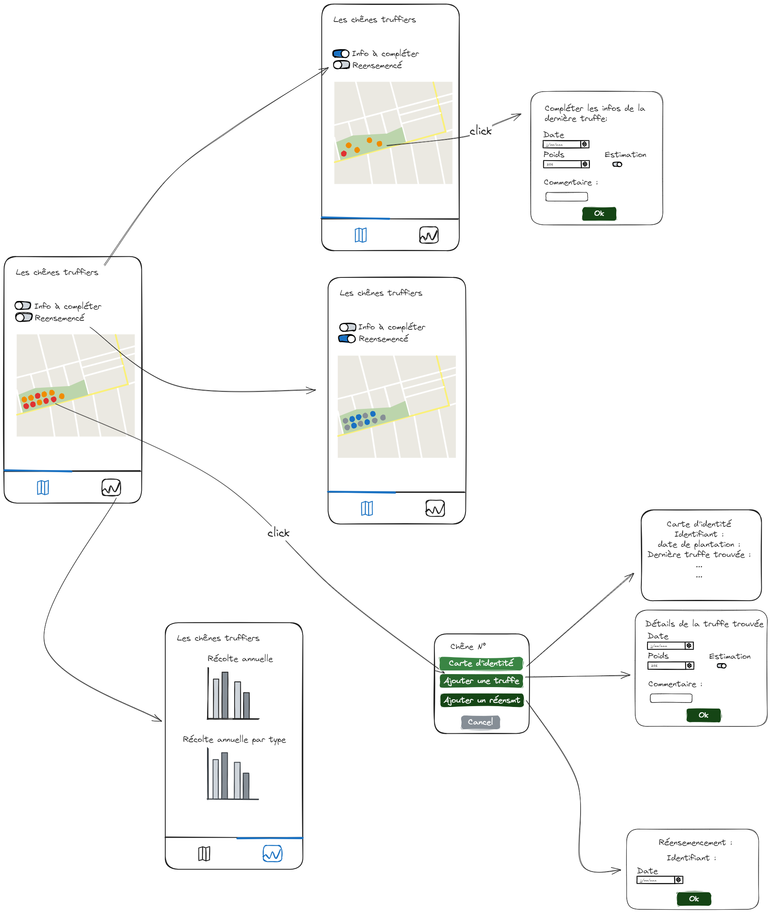
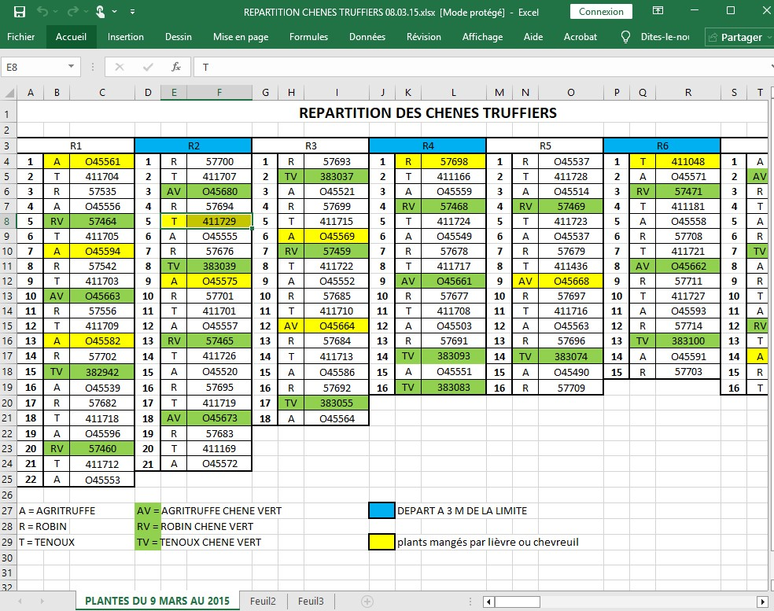
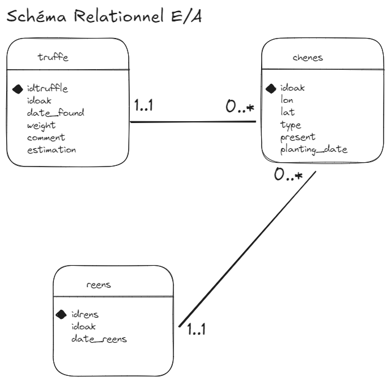
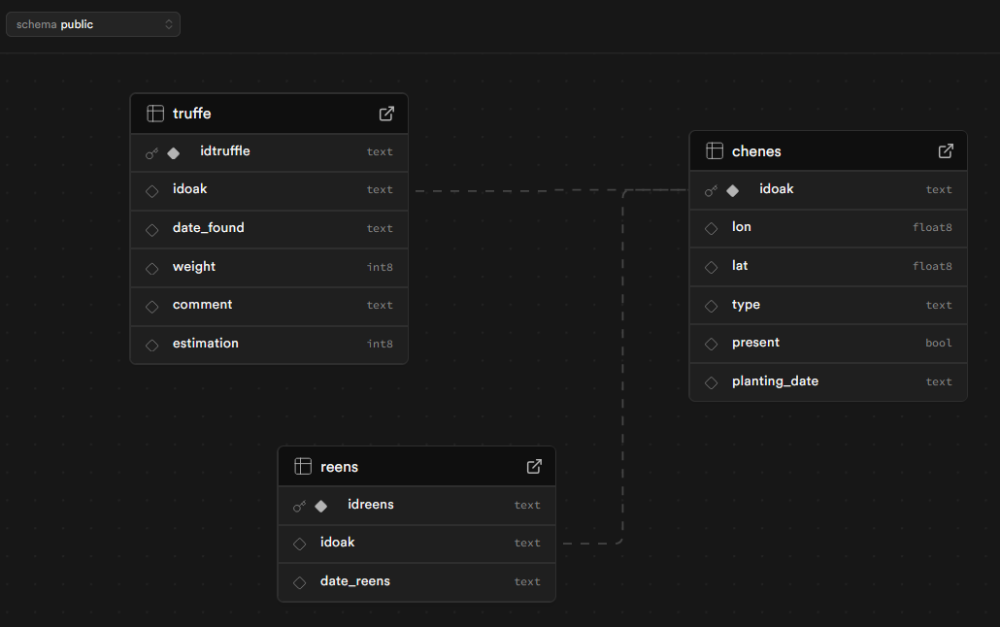
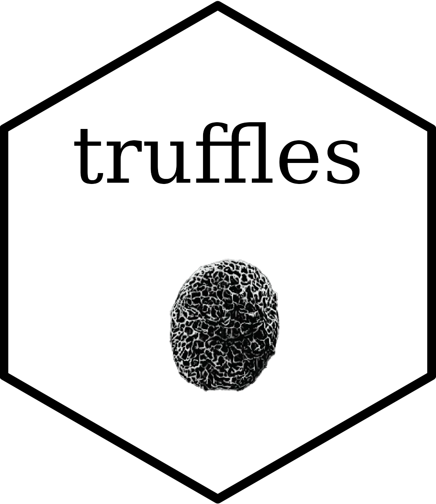
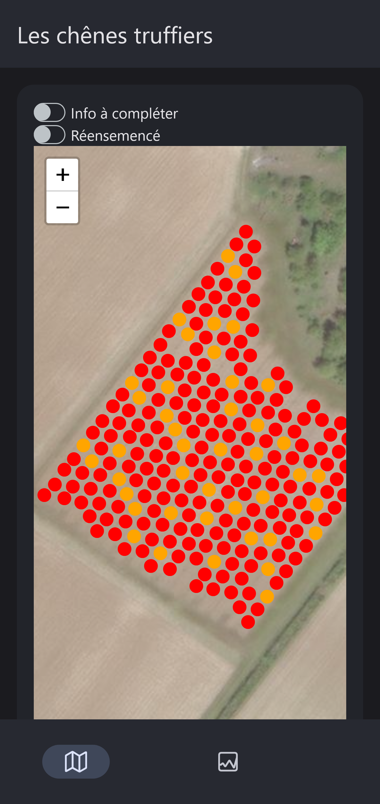
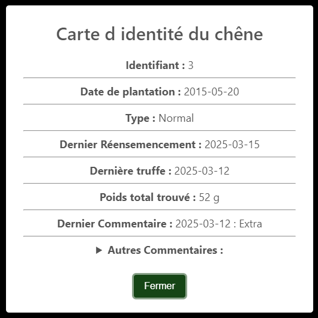
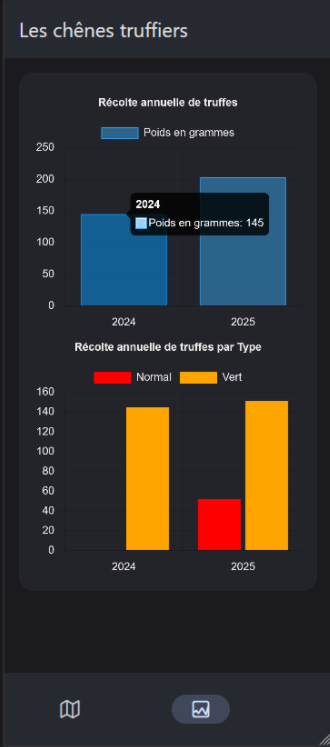
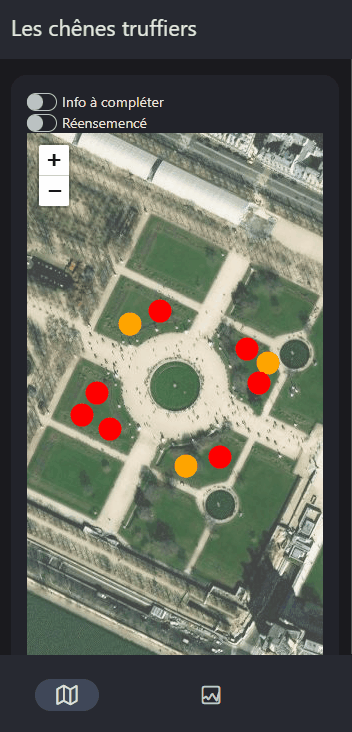
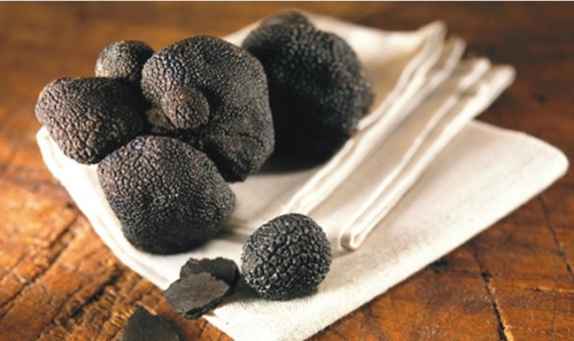

Truffles : une application Shiny pour cultiver ses données… et ses truffes !
2025-05-20
Qui suis-je ?
- Développeuse R chez ThinkR
- Maman (ça aussi c’est de la gestion de projet 😅)
- Mariée à un agriculteur 🚜
Pourquoi ce projet ?
Moi :
- A la suite d’un workshop js mené par un collègue, je cherchais un cas d’application (pour me faire la main)
- Sur un sujet qui ait du sens
- Pour un projet utile et utilisé
Mon mari :
- qui a une plantation de chênes truffiers 🌳
- qui commencent à produire des truffes (10 ans d’attentes quand même…)
- qui tente de mieux comprendre sa récolte
Et si je faisais une application Shiny ?
Définition du besoin
De quoi tu as besoin ?
- Visualiser les chênes truffiers
- Avoir l’historique des truffes par arbre
- Identifier les arbres réensemencés
- Pouvoir ajouter une nouvelle truffe
- Analyser les rendements par années, par réensemençage, par type
- Accessible en bottes au milieu du champs
On fait une maquette ?

Les données
Nettoyage & Structuration
📥 Source brute : tableur Excel (.xlsx)
Informations imbriquées :
N° de ligne et colonne = position physique
Cellule = type de plant + identifiant
Couleurs = méta-informations (plante mangée, limite, etc.)
Étape : Structuration tabulaire

Génération du GeoJSON avec geojson.io
A partir de la table structurée
Dessiner les points pour récupérer des attributs lat, lon
Exporter le fichier .geojson
🔁 Résultat : Un fichier léger, compatible avec de nombreux outils de visualisation web ou R
Mise en place d’une base de données relationnelle
🧱 Structure relationnelle :
chenes: coordonnées GPS et métadonnées de chaque chênetruffe: truffes trouvées au pied d’un chênereens: historique des réensemencement (remise en culture)
🔗 Relations clés :
chenes.idoak est la clé primaire (identifiant du chêne)
truffe.idoak et reens.idoak : clés étrangères vers chenes

Intégration dans Supabase
✅ Avantages
Simple de prise en main
Open source ou auto-hébergeable
Interface web moderne (SQL, rôles, tables)
API REST auto-générée, interrogeable en R
Logs sur les usages de la BDD
⚠️ Limite
- Mise en veille auto sur l’offre gratuite (inactivité)

L’approche technique
🌍 Leaflet.js : Cartographie Interactives des Arbres
Le besoin : Visualiser et interagir avec les chênes truffier sur une carte cliquable.
La solution JS : Utilisation de
Leaflet.jspour afficher des marqueurs pour chaque arbre, avec des interactions qui permettent de récupérer le numéro du chêne cliqué.
🍄 SweetAlert2 : Pop-ups Interactifs
Le besoin : Permettre aux utilisateurs d’ajouter des truffes via une interface conviviale, de visualiser les informations concernant un chêne truffier, …
La solution JS : Intégration de
SweetAlert2avec des formulaire HTML dans des modales et y capturer les informations nécessaires.
📊 Chart.js : Visualisation des Rendements
Le besoin : Afficher des graphiques des rendements de truffes.
La solution JS : Utilisation de
Chart.jspour générer des graphiques interactifs basés sur les données de la base.
Shiny + Golem : Application R Structurée
Le besoin : Disposer d’une application robuste, facilement maintenable et testable
La solution R : Structuration en package
{golem}pour séparer clairement interface, logique métier dans des modules.

📱 shinyMobile : Interface adaptée au terrain
Le besoin : Utiliser l’application sur smartphone directement au pied des arbres.
La solution R : Utilisation de
{shinyMobile}pour une interface responsive, légère.

👉 Un vrai mix R/JS
Fonctions métier

Peu de fonctions, mais ciblées !
- 📥 Connexion via
{DBI}
- 🔍 Lecture et traitement de données
- ✏️ Écriture de données dans la BDD
✅ Simples, lisibles, maintenables
✅ Métier encapsulé → testable et réutilisable
Des modules golem 🧩
Une application découpée en briques pour plus de lisibilité
- 📦 Utilisation des modules
{golem}:mod_carto_leaflet.R: carte interactivemod_dataviz.R: visualisation des rendements
app_ui <- function(request) {
tagList(
golem_add_external_resources(),
f7Page(
f7TabLayout(
navbar = f7Navbar(
title = "Les ch\u00eanes truffiers",
hairline = TRUE
),
f7Tabs(
animated = TRUE,
f7Tab(
tabName = "Carte",
icon = f7Icon("map"),
active = TRUE,
f7Card(
title = NULL,
mod_carto_leaflet_ui("carto_leaflet_1")
)
),
f7Tab(
tabName = "Graphe",
icon = f7Icon("graph_square"),
active = FALSE,
f7Card(
title = NULL,
mod_dataviz_ui("dataviz_1")
)
)
)
)
)
)
}Avec un peu de magie JS ✨
Grâce à
golem::invoke_js(), je peux…
- Appeler du code JavaScript depuis R
- Déclencher des animations ou des interactions JavaScript
- Communiquer entre R et JavaScript de manière fluide
# ...
info <- get_info(
dboak = global$chenes,
dbtruffle = global$truffe,
dbreensemence = global$reensemence,
theidoak = input$chene_click
)
golem::invoke_js(
"modal",
list(
id = input$chene_click,
type = info$chene$type,
date_reens = info$reensemence,
date_p = as.Date(info$chene$planting_date),
der_truf = info$truffes$last_truffle,
tot_weight = info$truffes$weight_tot,
last_comment = info$truffes$last_comment,
other_comments = info$truffes$other_comments
)
)
# ...Leaflet.js : Cartographie Interactives des Arbres
Extrait js:
for (var i = 0; i < locations.length; i++) {
marker = new L.circleMarker([locations[i].lat, locations[i].lon])
.unbindPopup()
.addTo(map)
.on("click", onClick);
marker.id = locations[i].idoak;
if (reens === 0) {
if (locations[i].type === "Normal") {
marker.setStyle({
color: "#FF0000",
fillColor: "#FF0000",
fillOpacity: 1,
});
} else {
marker.setStyle({
color: "#FFA500",
fillColor: "#FFA500",
fillOpacity: 1,
});
}
} else {
if (locations[i].info_reens === "1") {
marker.setStyle({
color: "#00AEEF",
fillColor: "#00AEEF",
fillOpacity: 1,
});
} else {
marker.setStyle({
color: "#7f9199",
fillColor: "#7f9199",
fillOpacity: 1,
});
}
}
}
SweetAlert2 : Pop-ups Interactifs
Extrait js:
document.getElementById("identity").addEventListener("click",
() => {
var filledtemplateidentitycard = fillTemplate(
templateidentitycard,
arg
);
Swal.fire({
title: "Carte d identité du chêne",
html: filledtemplateidentitycard,
showCancelButton: false,
confirmButtonText: `Fermer`,
}).then((result) => {
Shiny.setInputValue("chene_click",
null,
{ priority: "event" });
openMainSwal(cheneId);
});
});Exemple template HTML :
<b>Identifiant : </b> {{id}}
<hr> <b>Date de plantation : </b> {{date_p}}
<hr> <b>Type : </b> {{type}}
<hr> <b>Dernier Réensemencement : </b> {{date_reens}}
<hr> <b>Dernière truffe : </b> {{der_truf}}
<hr> <b>Poids total trouvé : </b> {{tot_weight}} g
<hr> <b>Dernier Commentaire : </b> {{last_comment}}
<hr>
<details>
<summary><b>Autres Commentaires :</b></summary>
{{other_comments}}
</details>
Chart.js : Visualisation des Rendements
Extrait js:
Shiny.addCustomMessageHandler('byyear', function(arg) {
if (newChart) newChart.destroy();
const ctx = document.getElementById(arg.id);
newChart = new Chart(ctx, {
type: 'bar',
data: {
labels: arg.labels,
datasets: [{
label: arg.label,
data: arg.data,
borderWidth: 1
}]
},
options: {
aspectRatio: 1.1,
responsive: true,
plugins: {
title: {
display: true,
text: arg.title
}
},
scales: {
y: {
beginAtZero: true
}
}
}
});
})
🚀 Déploiement auto sur Connect
- 📁 Code source sur GitHub : https://github.com/ThinkR-open/truffles/
- 2 branches principales :
- dev : recette (sur des données fictives)
- main : production (sur les données clients)
- 2 branches principales :
📌 Pas de Github Action pour le déploiement de l’application
📥 Déploiement depuis Posit Connect :
récupère le nouveau code depuis Github
reconstruit l’environnement
déploie automatiquement la nouvelle version
- Un CI/CD pour :
- Check multi-plateforme
- Déploiement de la documentation
{pkgdown} - Prévention de l’inactivité de la base via connexion régulière
Demo

Et le Client …
Les retours
⚙️ Facilité d’utilisation✅ “Ok ça va, j’ai compris comment ça marche, c’est simple !”
🗺️ Visibilité des données
✅ “C’est pratique de voir direct quel arbre a donné quoi”
Petites améliorations demandées et corrigées :
👆 Points un peu petits sur mobile
🔁 Un switchInput à déplacer pour plus d’ergonomie
💬 Les commentaires :“Finalement, je veux surtout voir le dernier commentaire”🚪 Les modales :
“Ce serait bien de pouvoir passer de la carte d’identité à la déclaration d’une truffe sans être obligé de recliquer sur l’arbre”
🌳 Cultiver ses données… et ses idées
Cette application est née d’un besoin concret, sur le terrain et d’un désir d’apprendre.
Elle m’a permis de :
💡 Mettre en application et Approfondir mes compétences en JS.
🤝 Collaborer étroitement avec un utilisateur final… mon mari !
🌱 Créer un outil simple, utile et utilisé.
🚀 Et la suite ?
- Phase de test terrain cet hiver : boue, froid… et truffes !
La vraie vie commence… à la prochaine récolte
Améliorations prévues :
📍 Intégration de la géolocalisation.
🔎 Mieux contrôler/sécuriser les inputs
🔐 Gestion des utilisateurs et des droits d’accès.
🧪 Aller plus loin dans les tests automatisés avec {playwright}.
Merci !
murielle@thinkr.fr

© Trufficulteurs Beauce-Val de Loire

Truffles : une application Shiny pour cultiver ses données… et ses truffes ! | Retrouvez nous sur https://thinkr.fr